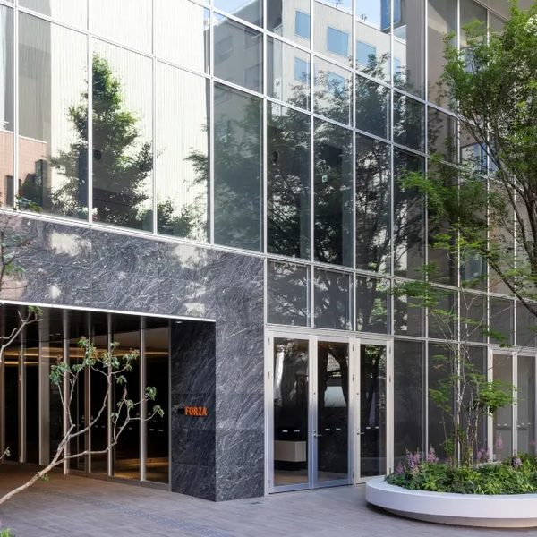
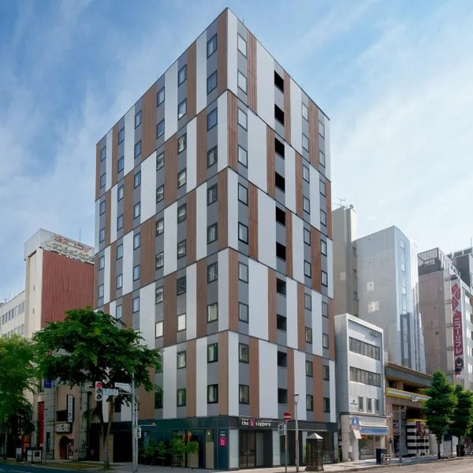

가이드투어 5%
가이드투어 5%
삿포로·홋카이도 · 인디고트래블
삿포로 비에이·후라노 1일 버스투어 (청의호수·흰수염폭포)
한국어 가이드무료 취소
예약 성사율 89% · 네이버 여행 기준
- 10시간 30분
- 예약 후 안내
- 입장료 별도
- 현장 +4,190원
7일 전까지 무료 취소
5%75,050원79,000원/ 1인
현장 추가금 포함 실질 79,240원
삿포로는 삿포로역·오도리·스스키노 세 구역이 지하철 두 정거장 안에 모여 있고, 신치토세공항에서는 JR 쾌속 에어포트 1,230엔으로 33~37분이면 들어옵니다. 숙소는 1박·2인 기준 오도리 파크 앞 8만 7,205원부터 스스키노 대욕장 19만 9,942원, 역 도보권 17만 9,208원까지입니다. 2월 눈축제는 2월 4~11일이고, 비에이·후라노 눈 투어는 2인 15만 원 안팎을 잡아야 합니다. 겨울 기온이 영하로 내려가니 복장과 미끄럼 방지부터 확인하세요.

네이버 여행에서 지금 판매 중인 상품입니다. 표시 가격은 1인 기준 최저가이고, 미팅 장소·입장료 포함 여부·현장 추가금·취소 마감일을 카드에 그대로 적었습니다.
가이드투어 5%
삿포로·홋카이도 · 인디고트래블
예약 성사율 89% · 네이버 여행 기준
7일 전까지 무료 취소
현장 추가금 포함 실질 79,240원
삿포로·홋카이도 · 노랑풍선
예약 성사율 96% · 네이버 여행 기준
30일 전까지 전액 환불
현장 추가금 포함 실질 1,209,820원
 자유여행
자유여행
삿포로·홋카이도 · 하나투어
예약 성사율 80% · 네이버 여행 기준
61일 전까지 무료 취소
삿포로·홋카이도 · 하나투어
예약 성사율 80% · 네이버 여행 기준
30일 전까지 전액 환불
 한국어 가이드
한국어 가이드
삿포로·홋카이도 · 트립닷컴
4.7 · 리뷰 54 · 트립닷컴 기준
1일 전 10:00까지 무료 취소
 온천 포함 동선
온천 포함 동선
삿포로·홋카이도 · 트립닷컴
4.7 · 리뷰 32 · 트립닷컴 기준
3일 전 12:00까지 무료 취소
삿포로·홋카이도 · 트립닷컴
4.9 · 리뷰 14 · 트립닷컴 기준
1일 전 10:00까지 무료 취소
| 상품 | 가격(1인) | 소요·가이드 | 미팅·시각 | 포함 사항 | 현장 추가금 | 최소/최대 인원 | 취소 규정 |
|---|---|---|---|---|---|---|---|
| 삿포로 비에이·후라노 1일 버스투어 (청의호수·흰수염폭포)인디고트래블 · 가이드투어 | 79,000원75,050원 5% 할인가 | 10:30 한국어 |
예약 확정 후 집결 장소·시간을 카카오톡으로 안내 오전 출발 · 시간은 확정 안내 |
차량 제반 비용, 한국인 정규 가이드, 준페이 매장식사 | ⚠ 점심 자유식(비에이) 외 1건 | 상세페이지 확인 필요 | 투어일 7일 전까지 취소·변경 가능 · 6일 전부터 환불 불가 |
| 부산 출발 삿포로 4일 (대욕장+온천+시내호텔·스노우래프팅)노랑풍선 · 풀패키지 | 1,206,000원1,169,820원 3% 할인가 | 3박 4일 한국어 |
김해국제공항 출발 항공 스케줄에 따라 상이 |
왕복 항공(에어부산)·TAX·유류, 대욕장 1박+온천 1박+시내호텔 1박, 일정표상 식사·입장료, 스노우래프팅 | ⚠ 가이드·기사 경비 40,000원(필수) 외 1건 | 상세페이지 확인 필요 | 30일 전까지 전액 환불 · 29일 전 10% · 19일 전 15% · 9일 전 20% · 7일 전 30% · 당일 50% |
| 인천 출발 삿포로 자유 4일 (머큐어 삿포로 3박)하나투어 · 에어텔 | 899,000원872,030원 3% 할인가 | 3박 4일 자유일정 |
인천국제공항 출발 항공 스케줄에 따라 상이 |
왕복 항공·유류·현지공항세, 머큐어 삿포로 3박(2인1실), 1억 여행자보험 | 없음 | 상세페이지 확인 필요 | 61일 전까지 무료 · 30일 전 5% · 20일 전 10% · 10일 전 15% · 8일 전 20% · 1일 전 30% · 당일 50% |
| 청주 출발 홋카이도 4일 (비에이·아오이이케·3대 온천)하나투어 · 풀패키지 | 2,729,000원2,647,130원 3% 할인가 | 3박 4일 한국어 |
청주국제공항 출발 항공 스케줄에 따라 상이 |
왕복항공(청주)·온천 2곳 3박·식사·입장료·기사/가이드 경비 | ⚠ 매너팁 (자율) 외 1건 | 상세페이지 확인 필요 | 30일 전까지 전액 환불 · 20일 전 10% · 10일 전 15% · 8일 전 20% · 1일 전 30% · 당일 50% |
| 비에이 하이라이트 5곳 일일투어 (크리스마스트리·청의호수·흰수염폭포·한국어 가이드)트립닷컴 · 가이드투어 | 75,138원 정가 판매 | 10:35 한국어 |
삿포로 시내 지정 미팅 장소 — 예약 확정 바우처에 장소·시간 안내 10:30 출발 · 21:05 종료 |
버스·차량, 한국어 가이드, 일정 내 명소 일반 입장, 어린이 안전시트 | ⚠ 식사(자유식) 외 1건 | 상세페이지 확인 필요 | 사용일 1일 전 10:00까지 무료 취소 · 이후 환불 불가 |
| 조잔케이 온천 + 홋카이도 신궁 + 시로이코이비토 파크 + 삿포로 맥주 박물관 당일 투어트립닷컴 · 가이드투어 | 57,948원 정가 판매 | 09:00 영어 |
삿포로 시내 지정 미팅 장소 — 예약 확정 바우처에 장소·시간 안내 08:50 미팅 · 09:00 출발 · 17:50 종료 |
버스·차량, 영어 가이드, 일정 내 명소 입장 | ⚠ 두대불전 입장료 외 1건 | 상세페이지 확인 필요 | 사용일 3일 전 12:00까지 무료 취소 · 이후 수수료 |
| 삿포로 + 오타루 하이라이트 (홋카이도 신궁·마루야마공원·부처의 언덕·오타루 자유시간)트립닷컴 · 가이드투어 | 60,226원 정가 판매 | 10:05 영어 |
삿포로 시내 지정 미팅 장소 — 예약 확정 바우처에 장소·시간 안내 09:30 출발 · 19:35 종료 |
버스·차량, 영어 가이드, 일정 내 어트랙션 티켓 | ⚠ 식사(자유식) 외 1건 | 1명부터 출발 / 최대 49명 | 사용일 1일 전 10:00까지 무료 취소 · 이후 환불 불가 |
표는 좌우로 넘길 수 있습니다. ‘상세페이지 확인 필요’는 판매 페이지에 값이 표기되지 않은 항목입니다.
투어·패키지 링크는 네이버 여행 커넥트 제휴 링크입니다. 예약이 이루어지면 판매자로부터 수수료를 받지만, 결제 금액은 같습니다.
삿포로 맛집은 영업 여부와 메뉴판 가격을 확인한 뒤 싣습니다. 그전까지 식비와 동선은 아래 3박4일 겨울 코스에 숫자로 계산해 두었습니다.
삿포로 선물·기념품 가격표는 매장별 확인이 끝나면 다음 업데이트에 넣습니다. 그전까지는 일본 선물 리스트에서 홋카이도 품목을 확인하세요.
 준비물 · 해외 멀티어댑터
네모탭 해외여행용 멀티어댑터 PD35W 5포트
쿠팡
12,900원~
쿠팡에서 구매
준비물 · 해외 멀티어댑터
네모탭 해외여행용 멀티어댑터 PD35W 5포트
쿠팡
12,900원~
쿠팡에서 구매
 준비물 · 기내용 캐리어 20인치
보튼캐리어 CL15 하드 캐리어 20인치
쿠팡
29,900원~
쿠팡에서 구매
준비물 · 기내용 캐리어 20인치
보튼캐리어 CL15 하드 캐리어 20인치
쿠팡
29,900원~
쿠팡에서 구매
 준비물 · 압축 파우치 5종
어반트립 부피제로 여행용 압축 파우치 5종 세트
쿠팡
12,000원~
쿠팡에서 구매
준비물 · 압축 파우치 5종
어반트립 부피제로 여행용 압축 파우치 5종 세트
쿠팡
12,000원~
쿠팡에서 구매
 준비물 · 보조배터리 10000mAh
스피디 슬림 듀얼 10000 보조배터리 + C타입 케이블
쿠팡
8,990원~
쿠팡에서 구매
준비물 · 보조배터리 10000mAh
스피디 슬림 듀얼 10000 보조배터리 + C타입 케이블
쿠팡
8,990원~
쿠팡에서 구매
준비물 링크는 쿠팡 파트너스 제휴 링크입니다. 이 포스팅은 쿠팡 파트너스 활동의 일환으로, 이에 따른 일정액의 수수료를 제공받습니다.
트립닷컴에서 직접 예약하는 숙소·항공권과, 현지에서 쓸 입장권·공항픽업·eSIM·공항철도입니다. 체크인 날짜와 방문일을 넣으면 그날 요금으로 열리고, 예약·결제는 트립닷컴에서 그대로 이루어집니다.
 9.4
호텔
9.4
호텔
삿포로역 640m·오도리 공원 390m
1934년 개업한 시내 중심 호텔로 오도리 공원 390m·삿포로역 640m입니다. 1,033개 리뷰 9.4, 위치 9.6·서비스 9.5로 시내 일정의 기준점이 됩니다.
삿포로역 610m·지하철 삿포로역 470m
삿포로역 610m, 3,118개 리뷰 9.3입니다. 일본식 조식 평가가 높고 공항 JR·오타루 이동이 짧아 3박 이상 머물 때 동선이 편합니다.
스스키노·삿포로역 인근 · Minami 5 Nishi 6
리뷰 2,332개·9.3 — 청결 9.5·서비스 9.4, 대욕장과 조식 평가가 높습니다. 1박 19만 9,942원.
삿포로역·다마코지 상점가 인근 · Kita 4 Nishi 5
리뷰 1,073개·9.3 — 청결 9.4·위치 9.4, 야외 온천과 다양한 조식이 강점입니다. 1박 24만 9,868원.

9.2 호텔삿포로역·오도리 공원 인근 · Kita 3 Nishi 2
리뷰 2,226개·9.2 — 삿포로역 도보권 위치 9.5, 조식과 전망 평가가 좋습니다. 1박 17만 9,208원.

9.2 호텔 9.2
호텔
9.2
호텔
삿포로역에서 갓파라이너 약 60분·조잔케이 온천 230m
조잔케이 온천 중심 230m, 550개 리뷰 9.2입니다. 유황 노천탕을 단독으로 쓰는 프라이빗 온천과 홋카이도 제철 가이세키가 평가의 중심입니다.
오도리 공원·삿포로역 인근 · Odori Nishi 8
리뷰 954개·9.0 — 오도리 공원 앞, 일본식 조식과 정원 뷰 평가가 높습니다. 1박 8만 7,205원으로 이 도시 조회분 최저가.
 8.8
호텔
8.8
호텔
삿포로역 460m·도보 6분
2025년 문을 연 호텔로 삿포로역 460m입니다. 꼭대기층 루프탑 온천에서 270도 전망을 보고, 949개 리뷰 8.8·청결도 9.2입니다.
이 포스팅은 트립닷컴 파트너스 활동의 일환으로, 예약이 이루어지면 일정액의 수수료를 제공받습니다. 숙소·항공권 가격과 예약 조건은 트립닷컴에서 그대로 결제되며, 수수료 때문에 가격이 올라가지 않습니다.
1일 300~590원권을 날짜별로 끊는 쪽과 3일 완전무제한 14,620원 두 갈래입니다. 2인 여행이면 인원수만큼 사야 하고, 설치 QR은 출발 전에 받아 두세요.
eSIM 카드는 네이버 쇼핑 커넥트 제휴 링크입니다. 이 포스팅은 네이버 쇼핑 커넥트 활동의 일환으로, 구매 발생 시 수수료를 제공받습니다. 결제 금액은 같습니다.
삿포로 숙소 9곳을 평점·리뷰·위치로 골랐습니다. 1박·2인·세금 포함 최저가는 87,205원~694,357원입니다. 최고 평점은 삿포로 그랜드 호텔입니다.
일본 이심 eSIM 도쿄 후쿠오카 대마도 KDDI 매일500MB 1일 — 1일 300원부터이고, 기간을 1~30일에서 고릅니다. 일정 첫날·마지막 날만 데이터가 필요할 때 1일권을 날짜별로 끊는 방식.
지금 판매 중인 상품 7개를 1인 가격과 미팅·포함 사항까지 같은 기준으로 비교했습니다. 1인 최저 57,948원입니다.
같은 도시의 교통패스 본전, 공항에서 시내까지 실제 요금, 패키지 실지출을 숫자로 계산한 글입니다.

삿포로·오타루 3박4일 겨울 일정을 JR 쾌속 에어포트·오타루 당일치기·비에이·후라노 버스투어로 짜고 2인 실경비를 계산했습니다. 눈축제(2027-02-04~11) 숙소는 1박 39만~47만원, 1월 중순은 17만~23만원입니다.

2027 삿포로 눈축제는 2월 4~11일. 비에이 겨울 버스투어 5만 원대부터 8만 원대까지 차이, JR로 직접 가는 2인 115,100원, 청의호수 라이트업 기간과 정기관광버스 2,000엔까지 정리했습니다.

눈축제 시즌 삿포로의 실제 기온과 체감, 미끄럼 방지 스파이크의 필요성, 방한 예산 15만원 내역, 눈길에서 늦어지는 이동 시간까지 정리했습니다.
같은 1월에도 삿포로 평균 -3.2도, 도쿄 5.4도, 오사카 6.2도로 9.4도 차이가 납니다. 삿포로는 한 달 137cm 눈이 오니 옷보다 신발이 먼저입니다. 도시별 평년값과 기온별 겹 수, 준비물 체크리스트를 한 표에 정리했습니다.

스이카·이코카·웰컴스이카는 쓰는 방식이 같고 보증금·유효기간·환불만 다릅니다. 잔액 1,000엔이면 환불은 1,280엔, 웰컴스이카는 28일 뒤 무효에 환불도 안 됩니다. 충전은 현금만, 한도는 20,000엔입니다.
4일 2인 기준으로 세 방식의 총액을 계산했습니다. 매일 500MB 제한형과 완전 무제한형이 언제 갈리는지, 테더링이 필요한 순간, 도착 전에 설치해야 하는 이유까지 정리했습니다.

일본에서 차를 빌리려면 제네바 협약 양식 국제운전면허증(9,000원)과 여권이 필요합니다. ETC 카드 대여료 220~550엔, KEP 3일 8,400엔, HEP 4일 7,700엔의 손익과 오키나와 할인, 레귤러 170엔/L, 사고 대처까지 한 번에 정리했습니다.